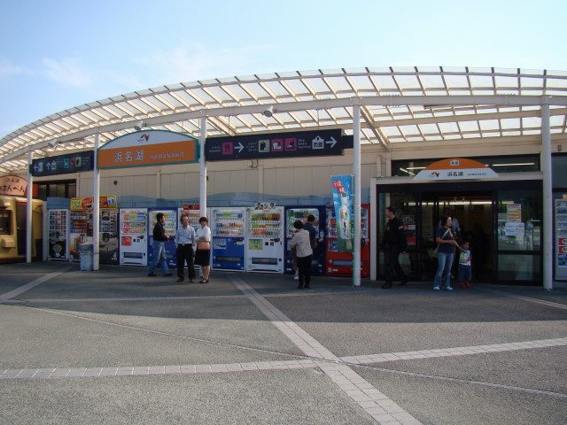
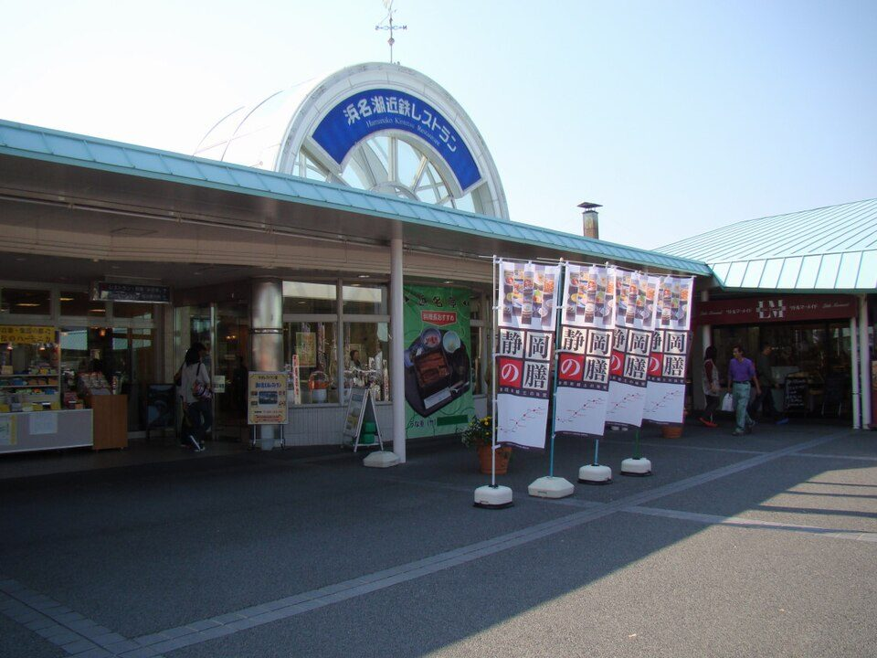
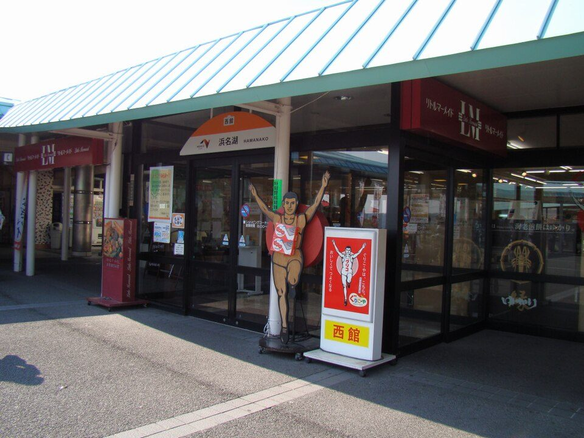
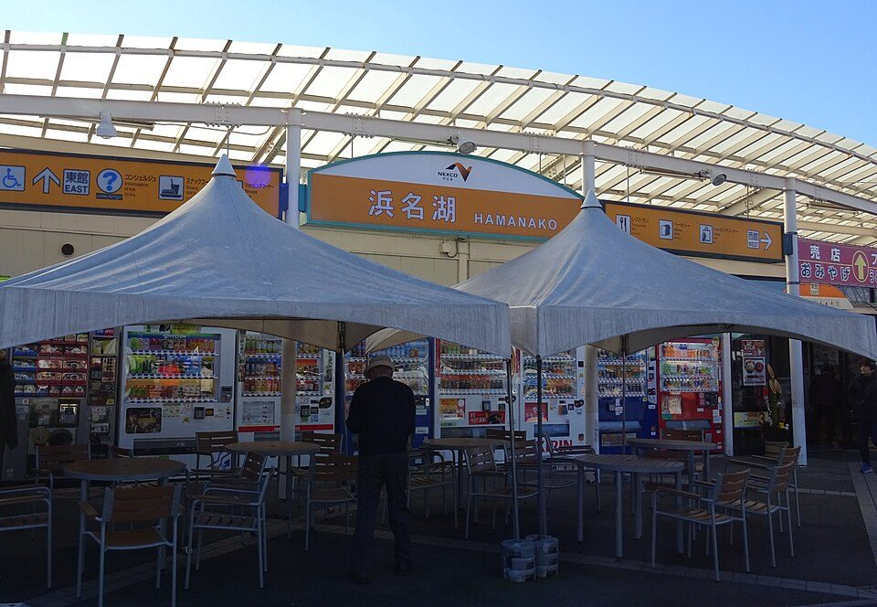
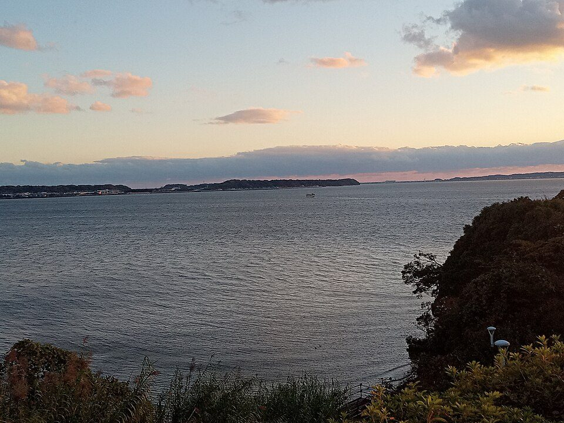
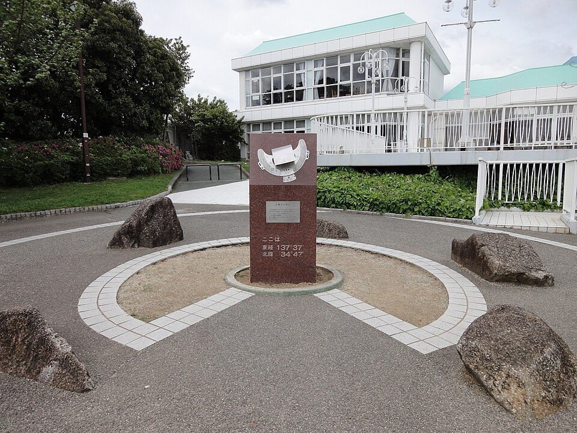

Road stops
27 places, grouped by drive date.
17 Dec
Yoshoku KatsuiYoshokuTabelog 3.67Google 4.2Dinner JPY 4,000 to 4,999Tenri-area yoshoku, parking available, lunch JPY 1,000-1,999, open 11:00-16:30MapDetails
- Closed days and dates
- Closed: MondayClosed Mondays; Thu 11:00-16:30
- Access and visiting notes
- Tabelog 3.67, 282 reviews. Tenri-area yoshoku, parking available, lunch JPY 1,000-1,999, open 11:00-16:30; child policy not stated.Parking: AvailableAddress (for a taxi): 奈良県天理市柳本町577-1 天理市トレイルセンターPhone: 0743-67-3838Planned Google Maps list: Foodlist 2026 - Road stopsReservation note: not stated
Kanaya HontenSukiyakiTabelog 3.90Google 4.3Dinner JPY 8,000 to 9,999Iga Ueno sukiyaki, children welcome, parking nearby, open from 9:00MapDetails
- Closed days and dates
- Closed: MondayClosed Mondays; Thu open 9:00-18:30 (hours may change)
- Access and visiting notes
- Tabelog 3.90, 450 reviews. Iga Ueno sukiyaki, children welcome, parking nearby, open from 9:00; dinner tier JPY 8,000-9,999 (splurge).Parking: Available There are plenty of private parking lots nearby as well as next to the store.Address (for a taxi): 三重県伊賀市上野農人町434Phone: 0595-21-0105Planned Google Maps list: Foodlist 2026 - Road stopsReservation note: not stated
Unagi HatsuneUnagiTabelog 3.54Google 4.2Dinner JPY 3,000 to 3,999Unagi at Seki, children welcome with kids menu, parking available, 74 seats, lunch JPY 3,000-3,999.MapDetails
- Closed days and dates
- Closed: Monday, TuesdayClosed Mon and Tue; Thu 11:00-14:00 and 16:00-19:00
- Access and visiting notes
- Tabelog 3.54, 518 reviews. Unagi at Seki, children welcome with kids menu, parking available, 74 seats, lunch JPY 3,000-3,999.Parking: AvailableAddress (for a taxi): 三重県亀山市関町新所898-1Phone: 0595-96-0157Planned Google Maps list: Foodlist 2026 - Road stopsReservation note: not stated
Takatora DogHot dogTabelog 3.52Google 4.2Lunch up to JPY 999Babies and strollers welcome, 40 parking units, open 8:00-17:00.MapDetails
- Closed days and dates
- Closed days: not statedNo closed day listed; 8:00-17:00; takeout only after 15:00No closed day listed; 8:00-17:00 (takeout only after 15:00)
- Access and visiting notes
- Tabelog 3.52, 228 reviews. Tsu hot dog, bread and cafe; babies and strollers welcome, 40 parking units, open 8:00-17:00.Parking: Available 40 unitsAddress (for a taxi): 三重県津市大里睦合町303-1Phone: 059-230-0109Saved to Google Maps list: Foodlist 2026 - Road stopsReservation note: not statedTabelog 3.52, 228 reviews. Hot dog and bread cafe, babies and children welcome, 40 parking, under JPY 1,000.
Meifutsu Tenmusu no SenjuOnigiriTabelog 3.67Google 4.3Lunch up to JPY 999Tsu tenmusu (shrimp rice ball) shop, children welcome, 4 parking spaces, under JPY 1,000MapDetails
- Closed days and dates
- Closed: SundayClosed Sunday and third Monday; Sat 9:30-17:30Closed Sundays and 3rd Monday; Thu 9:30-17:30
- Access and visiting notes
- Tabelog 3.67, 392 reviews. Tenmusu (onigiri) and regional cuisine in Tsu, children welcome, 4 parking spaces across the road, under JPY 1,000.Parking: Available 4 spaces across from restaurantAddress (for a taxi): 三重県津市大門9-7Phone: 059-228-6798Saved to Google Maps list: Foodlist 2026 - Road stopsReservation note: not statedTabelog 3.67, 392 reviews. Tsu tenmusu (shrimp rice ball) shop, children welcome, 4 parking spaces, under JPY 1,000; quick takeaway.
Yoshokuya GyuginYoshokuTabelog 3.71Google 4.2Dinner JPY 4,000 to 4,999Matsusaka yoshoku, 30 parking units, dinner JPY 4,000-4,999, last food 18:30.MapDetails
- Closed days and dates
- Closed days: not statedNo closed day listed; dinner 17:00-19:30 (L.O. 18:30) | Tabelog lists school-age children only: phone to ask whether toddlers are accepted. 25 seats and no reservations. Closed days follow the shop's own calendar, so confirm Saturday 19 Dec.No closed day listed; 11:00-16:00 (L.O. food 15:00), then 17:00-19:30 | Tabelog lists school-age children only: phone to ask whether toddlers are accepted. 25 seats and no reservations. Closed days follow the shop's own calendar, so confirm Saturday 19 Dec.
- Access and visiting notes
- Tabelog 3.71, 717 reviews. Matsusaka yoshoku, 30 parking units, dinner JPY 4,000-4,999, last food 18:30.Parking: Available 30 unitsAddress (for a taxi): 三重県松阪市魚町1618 牛銀本店隣Phone: 0598-26-7023Saved to Google Maps list: Foodlist 2026 - Road stopsReservation note: not statedTabelog 3.71, 717 reviews. Yoshoku in Matsusaka, 30 parking, lunch JPY 1,000-1,999,.Tabelog 3.71, 717 reviews. Yoshoku in Matsusaka, 30 parking, lunch JPY 1,000-1,999.
19 Dec
UnafujiUnagiTabelog 3.65Google 4.4Lunch JPY 2,000 to 2,999Tsu unagi, children welcome, parking available, 54 seats, lunch JPY 2,000-2,999.MapDetails
- Closed days and dates
- Closed: TuesdayClosed Tuesday; Sat 11:00-13:30 only (early lunch)
- Access and visiting notes
- Tabelog 3.65, 924 reviews, Tabelog Unagi 100 2026. Tsu unagi, children welcome, parking available, 54 seats, lunch JPY 2,000-2,999.Parking: AvailableAddress (for a taxi): 三重県津市高野尾町633-29Phone: 059-230-0093Saved to Google Maps list: Foodlist 2026 - Road stopsReservation note: not stated
Motive Pizzeria E CaseificioPizzaTabelog 3.95Google 4.3Dinner JPY 3,000 to 3,999Pizza and Italian in Suzuka, children welcome, kids chairs and tableware, 16 parking, lunch JPY 2,000-2,999MapDetails
- Closed days and dates
- Closed: Monday, SundayClosed Monday and Sunday | Saturday lunch is 11:00 to 15:00, last food order 14:00. Book by phone: the day's dough can sell out to reservations. One parking space per table.
- Access and visiting notes
- Tabelog 3.95, 285 reviews. Pizza and Italian in Suzuka, children welcome, kids chairs and tableware, 16 parking, lunch JPY 2,000-2,999; 5.7 km off the main route.Parking: Available There are 16 unitsAddress (for a taxi): 三重県鈴鹿市神戸9-5-20Phone: 059-318-4831Saved to Google Maps list: Foodlist 2026 - Road stopsReservation note: not stated
Ramen HachinoashihaRamenTabelog 3.81Google 4.0Lunch JPY 1,000 to 1,999Ramen and tsukemen in Yokkaichi, children welcome, kids menu, tatami seats, 9 parking spaces, lunch JPY 1,000-1,999.MapDetails
- Closed days and dates
- Closed: MondayClosed Monday; open 11:00-15:00 Sat | Only 13 seats (5 counter, 8 tatami) and no reservations: seven people will have to queue and may be split.
- Access and visiting notes
- Tabelog 3.81, 1,466 reviews. Ramen and tsukemen in Yokkaichi, children welcome, kids menu, tatami seats, 9 parking spaces, lunch JPY 1,000-1,999.Parking: Available 9 parking spaces around restaurantAddress (for a taxi): 三重県四日市市城北町1-12 ル・グラン １ＦPhone: 059-351-5227Saved to Google Maps list: Foodlist 2026 - Road stopsReservation note: not stated
TakakuraTonkatsuTabelog 3.59Google 4.2Dinner JPY 2,000 to 2,999Tonkatsu and pork dishes, children welcome, 5 parking spaces in front, lunch JPY 2,000-2,999, 20 seats.MapDetails
- Closed days and dates
- Closed: Wednesday, ThursdayClosed Wednesday and Thursday; Sat 11:00-13:00 lunch | Lunch ends at 13:00, with 20 seats, no reservations and 5 parking spaces: only workable if you leave VISON promptly at 11:00.
- Access and visiting notes
- Tabelog 3.59, 407 reviews. Tonkatsu and pork dishes, children welcome, 5 parking spaces in front, lunch JPY 2,000-2,999, 20 seats.Parking: Available 5 parking spaces (Parking is available only in front of the restaurant)Address (for a taxi): 三重県四日市市赤堀2-6-8Phone: 059-358-3322Saved to Google Maps list: Foodlist 2026 - Road stopsReservation note: not stated
Pont-l'EvequeBreadTabelog 3.62Google 4.1Lunch JPY 1,000 to 1,999Bakery cafe with lunch, children and strollers welcome, 30 parking, 43 seats, lunch JPY 1,000-1,999, near Kanie.MapDetails
- Closed days and dates
- Closed: WednesdayClosed Wednesday; Sat 8:00-17:00
- Access and visiting notes
- Tabelog 3.62, 575 reviews. Bakery cafe with lunch, children and strollers welcome, 30 parking, 43 seats, lunch JPY 1,000-1,999, near Kanie.Parking: Available 30 unitsAddress (for a taxi): 愛知県海部郡蟹江町学戸2-38Phone: 0567-96-6646Saved to Google Maps list: Foodlist 2026 - Road stopsReservation note: not stated
20 Dec
Kimi no Hamburger Steak wo Tabetai Mitsui outletto paaku okazaki tenHamburger steakTabelog 3.63Google 4.6Dinner JPY 1,000 to 1,999Kids menu, babies and strollers welcome, parking.MapDetails
- Closed days and dates
- Closed days: not statedNo closed day listed; 11:00-21:00
- Access and visiting notes
- Hamburger steak at an outlet park, 3.63, 200 reviews. Kids menu, babies and strollers welcome, parking. JPY 1,000-1,999.Parking: AvailableAddress (for a taxi): 愛知県岡崎市舞木町金森53-1 三井アウトレットパーク岡崎E1棟 2F 2300区画Phone: 0564-47-8089Saved to Google Maps list: Foodlist 2026 - Road stopsReservation note: not stated
Sanpo MichiCafeTabelog 3.53Google 4.2Lunch JPY 1,000 to 1,999Sun 10:00-17:30 open (closed Tue)MapDetails
- Closed days and dates
- Closed: TuesdaySun 10:00-17:30 open (closed Tue) | A honey shop with a small cafe: 12 seats at four tables and no stated child policy. Takeaway is the safer plan for seven.
- Access and visiting notes
- Cafe and sweets shop, 3.53 with 234 reviews. Parking available; child policy not stated. Lunch JPY 1,000-1,999.Parking: AvailableAddress (for a taxi): 愛知県豊川市豊津町釜ノ口64-1Phone: 0533-93-7422Saved to Google Maps list: Foodlist 2026 - Road stopsReservation note: not stated
EXPASA Hamanako eastboundGoogle 4.0Price not statedEastbound EXPASA Hamanako service area near Hamamatsu.MapDetails
- Closed days and dates
- Closed days: not statedHours not stated.
- Access and visiting notes
- Eastbound EXPASA Hamanako service area near Hamamatsu. Google shows 4.0 (2,197 reviews) for this eastbound listing; a separate listing for the shared dining building (EXPASA Lake Hamanako) shows 3.8 from 10,549 reviews. Expressway stops are allowed on Google rating alone.Parking: not statedAddress (for a taxi): not statedPhone: 053-526-7220Saved to Google Maps list: Foodlist 2026 - Road stopsReservation note: not stated
EXPASA Hamanako eastbound
Lake-view service area with eel restaurant and other meal options.
Route: T. E1 Tomei, Hamanako SA, shared lakefront commercial area
Extra driving: On the expressway: 0 min / 0 km exit/re-entry diversion. Do not switch from Shin-Tomei solely expecting a zero-detour visit; choose this on the Tomei route.
Time to allow: 40–70 min on site, plus driving, queues and child-seat handling.
Family in December: Good grandparents’ seated lunch and short toddler break if driving Tomei; not a direct Shin-Tomei stop. Indoor dining; optional outdoor lakeside walk. Building-only stop is easier; lakefront stroll adds walking and wind exposure.
Toilets / baby facilities: SA toilets and accessible toilets listed. NEXCO baby-facility list includes Hamanako; confirm the nearest room on site.
Hours (Japan time): Hamanatei eel restaurant 11:00–21:00 (L.O.20:30); other tenants differ. Closed: No routine closed day stated for selected restaurant; exact Sunday unverified. Exact travel-date operation unverified.
Food budget: Published Hamanatei eel meals JPY 4,000–6,000 (≈ SGD 32.40–48.60 · ≈ MYR 102.80–154.20); cheaper food-court choices available but current prices unverified. Admission / parking: No admission charge; expressway tolls apply.












Sumiyaki Unagi KamoUnagiTabelog 3.78Google 4.5Dinner JPY 4,000 to 4,999Sun 11:00-14:00 open (closed Wed, Thu)MapDetails
- Closed days and dates
- Closed: Wednesday, ThursdaySun 11:00-14:00 open (closed Wed, Thu)
- Access and visiting notes
- Tabelog 3.78, 971 reviews, Unagi 100 2026. Children welcome; own parking. Lunch JPY 3,000-3,999. Open until sold out.Parking: Available There are also stores in front of and next to restaurant, and across the street.Address (for a taxi): 静岡県浜松市浜名区三ヶ日町都筑791-8Phone: 053-526-2428Saved to Google Maps list: Foodlist 2026 - Road stopsReservation note: not stated
Unagi Pie Factory ShopSweetsTabelog 3.56Google 4.1Price not statedChildren welcome, parking available.MapDetails
- Closed days and dates
- Closed: Tuesday, WednesdaySun 10:00-17:30 open (closed Tue, Wed)
- Access and visiting notes
- Western-style sweets shop in Hamamatsu, 3.56 with 394 reviews. Children welcome, parking available.Parking: AvailableAddress (for a taxi): 静岡県浜松市中央区大久保町748-51Phone: 053-482-1765Saved to Google Maps list: Foodlist 2026 - Road stopsReservation note: not stated
Sumiyaki Unagi AoiyaUnagiTabelog 3.70Google 4.5Dinner JPY 3,000 to 3,999Children welcome, 15 parking spaces.MapDetails
- Closed days and dates
- Closed: MondaySun 11:00-13:30 open (closed Mon)
- Access and visiting notes
- Unagi 100 2026, 3.70 with 1,062 reviews. Children welcome, 15 parking spaces. Lunch JPY 3,000-3,999.Parking: Available 15 unitsAddress (for a taxi): 静岡県浜松市中央区飯田町616-2Phone: 053-464-6323Saved to Google Maps list: Foodlist 2026 - Road stopsReservation note: not stated
Japan Cha Kimikura HontenCafeTabelog 3.56Google 4.4Dinner JPY 1,000 to 1,999Children welcome with a kids menu.MapDetails
- Closed days and dates
- Closed days: not statedNo closed day listed; 10:00-18:00
- Access and visiting notes
- Tea cafe, 3.56 with 279 reviews. Children welcome with a kids menu. Weekend parking is temporary.Parking: Available Temporary parking available on weekendsAddress (for a taxi): 静岡県掛川市板沢510-5Phone: 0537-24-6008Saved to Google Maps list: Foodlist 2026 - Road stopsReservation note: not stated
Yaizu Ko MinamiKaisen-donTabelog 3.73Google 4.5Dinner JPY 4,000 to 4,999Sun 11:00-14:00 open (closed days not stated)MapDetails
- Closed days and dates
- Closed days: not statedSun 11:00-14:00 open (closed days not stated)
- Access and visiting notes
- Shizuoka seafood bowls, 3.73 with 1,098 reviews. Children welcome. Parking unavailable. Lunch JPY 1,000-1,999.Parking: UnavailableAddress (for a taxi): 静岡県静岡市駿河区南町2-14 1FPhone: 054-283-5777Saved to Google Maps list: Foodlist 2026 - Road stopsReservation note: not stated
OoyakiimoCafe featuring Japanese sweetsTabelog 3.62Google 4.3Dinner JPY 1,000 to 1,999Children welcome, 12 parking spaces.MapDetails
- Closed days and dates
- Closed: Monday, TuesdaySun 10:30-16:30 open (closed Mon, Tue) | In central Shizuoka, about 4 to 5 km of city streets from the Tomei Shizuoka interchange, so allow 15 to 20 minutes each way.
- Access and visiting notes
- Japanese sweets cafe with onigiri and oden, 3.62, 343 reviews. Children welcome, 12 parking spaces.Parking: Available Parking: 12 spaces (head south down the narrow street on the left side of the store, then it's the second building on the left)Address (for a taxi): 静岡県静岡市葵区東草深町5-12Phone: 054-245-8862Saved to Google Maps list: Foodlist 2026 - Road stopsReservation note: not stated
Sawayaka Fuji takaoka tenFamily restaurantTabelog 3.56Google 4.4Dinner JPY 1,000 to 1,999Kids menu, babies and strollers welcome, 42 parking spaces.MapDetails
- Closed days and dates
- Closed: ThursdaySun 10:30-22:00 open (closed Thu) | No reservations; Sunday waits can be long. About 10 minutes by car from the Fuji interchange. Same chain as the Gotemba branch on the Wed 23 Dec drive. | Tabelog adds that closures can be irregular: confirm the date.
- Access and visiting notes
- Hamburger steak family restaurant, 3.56, 693 reviews. Kids menu, babies and strollers welcome, 42 parking spaces. JPY 1,000-1,999.Parking: Available 42 unitsAddress (for a taxi): 静岡県富士市久沢847-11Phone: 0545-73-2266Saved to Google Maps list: Foodlist 2026 - Road stopsReservation note: not stated
Tagonoura Ko Gyokyo ShokudoKaisen-donTabelog 3.49Google 4.2Dinner JPY 1,000 to 1,999Children welcome, about 50 parking spaces.MapDetails
- Closed days and dates
- Closed days: not statedNo closed day listed; 10:00-13:30 | About 20 minutes by car from the Tomei Fuji interchange and it closes at 13:30, so it only works if you reach Fuji by about 12:30. Confirm it is open on Sunday 20 Dec before detouring.
- Access and visiting notes
- Fishermen's co-op canteen with seafood bowls, 3.49, 523 reviews. Children welcome, about 50 parking spaces. JPY 1,000-1,999.Parking: Available Approximately 50 unitsAddress (for a taxi): 静岡県富士市前田字新田866-6Phone: 0545-61-1004Saved to Google Maps list: Foodlist 2026 - Road stopsReservation note: not stated
23 Dec
Sawayaka Gotenba inta tenFamily restaurantTabelog 3.53Google 4.2Dinner JPY 1,000 to 1,999Family restaurant with kids menu, strollers welcome, 32 cars plus 29 moreMapDetails
- Closed days and dates
- Closed: ThursdayClosed Thursday; Wed open, from 10:45 | No reservations and long waits are normal here: take a queue ticket as soon as you arrive and keep a fallback, because the car is due back at Tokyo Station by 15:00. | Tabelog adds that closures can be irregular: confirm the date.
- Access and visiting notes
- Tabelog 3.53, 2,140 reviews; family restaurant with kids menu, strollers welcome, 32 cars plus 29 more; JPY 1,000-1,999.Parking: Available 32 cars, plus 29 cars in the second parking lotAddress (for a taxi): 静岡県御殿場市東田中984-1Phone: 0550-82-8855Saved to Google Maps list: Foodlist 2026 - Road stopsReservation note: not stated
Meitetsu SaikanChineseTabelog 3.56Google 4.1Dinner JPY 5,000 to 5,999Babies and strollers welcome, private rooms, about 140 parkingMapDetails
- Closed days and dates
- Closed days: not statedLunch 11:30-15:00. Chinese restaurant. Tabelog lists no closed day, but there may be 2nd/4th Tuesday closures: 22 Dec is the 4th Tuesday, so confirm before planning dinner.
- Access and visiting notes
- Tabelog 3.56 Chinese with Fuji view; babies and strollers welcome, private rooms, about 140 parking; lunch JPY 2,000-2,999.Parking: Available Parking available for approximately 140 passenger carsAddress (for a taxi): 静岡県御殿場市新橋732-1Phone: 050-5869-9010 (Tabelog relay number)Saved to Google Maps list: Foodlist 2026 - Road stopsReservation note: not stated
Chuka Soba Menya Shokudo HontenRamenTabelog 3.77Google 4.4Dinner JPY 1,000 to 1,999No closed day listed, 11:00-22:30MapDetails
- Closed days and dates
- Closed days: not statedNo closed day listed, 11:00-22:30
- Access and visiting notes
- Tabelog 3.77, 2,629 reviews, Ramen 100 Kanagawa 2025; kids menu, children welcome; 16 monthly-lot spaces; lunch under JPY 999.Parking: Available There are 16 parking spaces (No. 7-9, 16-28) in the monthly parking lot along the Odakyu Line elevated track, on the left side of restaurant when you come from the north. Please note that this is not a monthly parking lot adjacent to restaurant. You will need to tell us where you would like to park when ordering.Address (for a taxi): 神奈川県厚木市幸町9-6Phone: 046-228-3978Saved to Google Maps list: Foodlist 2026 - Road stopsReservation note: not stated
FicodindiaItalianTabelog 3.59Google 4.4Dinner JPY 5,000 to 5,999Babies, preschoolers welcome, kids menuMapDetails
- Closed days and dates
- Closed: MondayClosed Monday; Wed lunch 11:30-15:00
- Access and visiting notes
- Italian pasta, Tabelog 3.59; babies, preschoolers welcome, kids menu; parking dinner time only; lunch JPY 1,000-1,999.Parking: Available Dinner time onlyAddress (for a taxi): 神奈川県厚木市旭町1-24-16Phone: 050-5593-7883 (Tabelog relay number)Saved to Google Maps list: Foodlist 2026 - Road stopsReservation note: not stated
IDEBOK Ebina SA nobori tenGelatoTabelog 3.64Google 4.0Dinner up to JPY 999Parking availableMapDetails
- Closed days and dates
- Closed days: not statedNo closed day listed; 08:00-22:00
- Access and visiting notes
- Tabelog 3.64, Tabelog 100 2026; parking available; under JPY 999.Parking: AvailableAddress (for a taxi): 神奈川県海老名市大谷南5-1-1 海老名サービスエリア上りPhone: 046-231-7767Saved to Google Maps list: Foodlist 2026 - Road stopsReservation note: not stated
Notes and sources
17 Dec · route context
Places already listed in an area
Toyo Ken Honten · on this drive. Place notes and Maps →
Issho Bin Honten · on this drive. Place notes and Maps →
19 Dec · route context
Places already listed in an area
Beef Club Noel · on this drive. Place notes and Maps →
Issho Bin Honten · on this drive. Place notes and Maps →
Takatora Dog · on this drive. Place notes and Maps →
Meifutsu Tenmusu no Senju · on this drive. Place notes and Maps →
Yoshokuya Gyugin · on this drive. Place notes and Maps →
20 Dec · route context
Places already listed in an area
Toraya Kobo · on this drive. Place notes and Maps →
23 Dec · route context
Places already listed in an area
Komen-ya Reel Cafe · on this drive. Place notes and Maps →
Katsu Ei Gotenba ten · on this drive. Place notes and Maps →
Toraya Kobo · on this drive. Place notes and Maps →
ZEIT BAKERY CAFE · on this drive. Place notes and Maps →
Menkyo Kaiden · on this drive. Place notes and Maps →
Kikukawa Gotenba · on this drive. Place notes and Maps →
Shirasu Udon · on this drive. Place notes and Maps →
Kurechi Udon · on this drive. Place notes and Maps →
- Place
- Yoshoku KatsuiYoshoku (Japanese style western cuisine)Family JapaneseChild policy not stated
- Ratings
- Tabelog 3.67 (282)Google 4.2 (750)
- Price
- Dinner JPY 4,000 to 4,999Lunch JPY 1,000 to 1,999
- Place
- Kanaya HontenSukiyaki (Japanese sweet soy hotpot), Beef dishes, Shabu shabu (Japanese hotpot)Local specialtyChildren welcome
- Ratings
- Tabelog 3.90 (450)Google 4.3 (686)
- Price
- Dinner JPY 8,000 to 9,999
- Place
- Unagi HatsuneUnagi (Eel)Local specialtyChildren welcome
- Ratings
- Tabelog 3.54 (518)Google 4.2 (1,583)
- Price
- Dinner JPY 3,000 to 3,999Lunch JPY 3,000 to 3,999
- Place
- Takatora DogHot dog, Cafe, BreadCafe and coffeeChildren welcome
- Ratings
- Tabelog 3.52 (228)Google 4.2 (1,329)
- Price
- Lunch up to JPY 999
- Place
- Meifutsu Tenmusu no SenjuOnigiri (Rice ball), Regional CuisineLocal specialtyChildren welcome
- Ratings
- Tabelog 3.67 (392)Google 4.3 (476)
- Price
- Lunch up to JPY 999
- Place
- Yoshokuya GyuginYoshoku (Japanese style western cuisine), SteakFamily JapaneseChildren with conditions (see note)
- Ratings
- Tabelog 3.71 (717)Google 4.2 (494)
- Price
- Dinner JPY 4,000 to 4,999Lunch JPY 1,000 to 1,999
- Place
- UnafujiUnagi (Eel)Local specialtyChildren welcome
- Ratings
- Tabelog 3.65 (924)Google 4.4 (2,493)
- Price
- Lunch JPY 2,000 to 2,999
- Place
- Motive Pizzeria E CaseificioPizza, ItalianItalianChildren welcome
- Ratings
- Tabelog 3.95 (285)Google 4.3 (238)
- Price
- Dinner JPY 3,000 to 3,999Lunch JPY 2,000 to 2,999
- Place
- Ramen HachinoashihaRamen, Tsukemen (Dipping noodles), Donburi (Rice bowl)Family JapaneseChildren welcome
- Ratings
- Tabelog 3.81 (1,466)Google 4.0 (1,094)
- Price
- Lunch JPY 1,000 to 1,999
- Place
- TakakuraTonkatsu (Pork cutlet), Pork dishes, CafeteriaFamily JapaneseChildren welcome
- Ratings
- Tabelog 3.59 (407)Google 4.2 (781)
- Price
- Dinner JPY 2,000 to 2,999Lunch JPY 2,000 to 2,999
- Place
- Pont-l'EvequeBread, Cafe, Nabe (Japanese hot pot)Cafe and coffeeChildren welcome
- Ratings
- Tabelog 3.62 (575)Google 4.1 (899)
- Price
- Lunch JPY 1,000 to 1,999
- Place
- Kimi no Hamburger Steak wo Tabetai Mitsui outletto paaku okazaki tenHamburger steakFamily JapaneseChildren welcome
- Ratings
- Tabelog 3.63 (200)Google 4.6 (2,428)
- Price
- Dinner JPY 1,000 to 1,999Lunch JPY 1,000 to 1,999
- Place
- Sanpo MichiCafe, SweetsCafe and coffeeChild policy not stated
- Ratings
- Tabelog 3.53 (234)Google 4.2 (857)
- Price
- Lunch JPY 1,000 to 1,999
- Place
- EXPASA Hamanako eastboundExpressway stop, Google rating onlyChild policy not stated
- Ratings
- Google 4.0 (2,197)
- Price
- Price not stated
- Place
- Sumiyaki Unagi KamoUnagi (Eel)Local specialtyChildren welcome
- Ratings
- Tabelog 3.78 (971)Google 4.5 (1,419)
- Price
- Dinner JPY 4,000 to 4,999Lunch JPY 3,000 to 3,999
- Place
- Unagi Pie Factory ShopSweets (Western style)Local specialtyChildren welcome
- Ratings
- Tabelog 3.56 (394)Google 4.1 (1,067)
- Price
- Price not stated
- Place
- Sumiyaki Unagi AoiyaUnagi (Eel), Donburi (Rice bowl)Local specialtyChildren welcome
- Ratings
- Tabelog 3.70 (1,062)Google 4.5 (1,677)
- Price
- Dinner JPY 3,000 to 3,999Lunch JPY 3,000 to 3,999
- Place
- Japan Cha Kimikura HontenCafeCafe and coffeeChildren welcome
- Ratings
- Tabelog 3.56 (279)Google 4.4 (1,384)
- Price
- Dinner JPY 1,000 to 1,999Lunch JPY 1,000 to 1,999
- Place
- Yaizu Ko MinamiKaisen-don (Seafood bowl)Local specialtyChildren welcome
- Ratings
- Tabelog 3.73 (1,098)Google 4.5 (1,307)
- Price
- Dinner JPY 4,000 to 4,999Lunch JPY 1,000 to 1,999
- Place
- OoyakiimoCafe featuring Japanese sweets, Onigiri (Rice ball), OdenCafe and coffeeChildren welcome
- Ratings
- Tabelog 3.62 (343)Google 4.3 (465)
- Price
- Dinner JPY 1,000 to 1,999Lunch JPY 1,000 to 1,999
- Place
- Sawayaka Fuji takaoka tenFamily restaurant, Hamburger steak, SteakFamily JapaneseChildren welcome
- Ratings
- Tabelog 3.56 (693)Google 4.4 (4,022)
- Price
- Dinner JPY 1,000 to 1,999Lunch JPY 1,000 to 1,999
- Place
- Tagonoura Ko Gyokyo ShokudoKaisen-don (Seafood bowl), Seafood, CafeteriaLocal specialtyTabelog 3.3 to 3.49Children welcome
- Ratings
- Tabelog 3.49 (523)Google 4.2 (3,012)
- Price
- Dinner JPY 1,000 to 1,999Lunch JPY 1,000 to 1,999
- Place
- Sawayaka Gotenba inta tenFamily restaurant, Hamburger steak, SteakFamily JapaneseChildren welcome
- Ratings
- Tabelog 3.53 (2,140)Google 4.2 (6,779)
- Price
- Dinner JPY 1,000 to 1,999Lunch JPY 1,000 to 1,999
- Place
- Meitetsu SaikanChineseOther good picksChildren welcome
- Ratings
- Tabelog 3.56 (643)Google 4.1 (1,424)
- Price
- Dinner JPY 5,000 to 5,999Lunch JPY 2,000 to 2,999
- Place
- Chuka Soba Menya Shokudo HontenRamen, Tsukemen (Dipping noodles)Family JapaneseChildren welcome
- Ratings
- Tabelog 3.77 (2,629)Google 4.4 (3,728)
- Price
- Dinner JPY 1,000 to 1,999Lunch up to JPY 999
- Place
- FicodindiaItalian, PastaItalianChildren welcome
- Ratings
- Tabelog 3.59 (430)Google 4.4 (532)
- Price
- Dinner JPY 5,000 to 5,999Lunch JPY 1,000 to 1,999
- Place
- IDEBOK Ebina SA nobori tenGelato, Ice cream, Crepe, GaletteCafe and coffeeChild policy not stated
- Ratings
- Tabelog 3.64 (666)Google 4.0 (161)
- Price
- Dinner up to JPY 999
Selection rules and source context
38 places (43 stops; one place is on two legs) · on the driving days: Thu 17, Sat 19, Sun 20 and Wed 23 Dec
Thu 17 Dec (Osaka pick-up at 12:00 to Hatago VISON) was added on 14 Nov, after the car moved to Osaka. No expressway service area or road-side station on that drive reached Google 4.0 (Anou SA down 3.5, Iga SA 3.5, Hari T.R.S. 3.7, Seki-juku 3.5; Kashiba SA and Tenri PA come too early), and no rated place sits between Tenri and Iga, so plan one proper lunch stop.